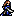

Character Overview
Eyvel is Thracia 776's Jagen, and evidently so. She joins in Chapter 1 and is your best unit during the first few chapters, but she has a lot of quirks
that you should know about before I get into this guide. No spoilers!
Eyvel will leave your party after Chapter 3, and will reapper for one chapter (Chapter 5) before you need to recruit her
again in Chapter 24x, which is one chapter before the endgame. Her availability is basically non-existent after Chapter 5,
so you can only really use her in the beginning of the game. Once she's recruited again in Chapter 24x, her stats aren't enough
to justify using her, since it would already be the end of the game.
Despite all this, Eyvel is a great unit for the first few chapters. Her stats are through the roof (by the early-game standards),
she has an A Sword Rank, and she has plot armor before she departs for Chapter 24x, but more on that later.
However, being a Jagen, you don't want to abuse her to the point where she's just stealing EXP. Be mindful when using her, train
your early game units, and use her to get out of tight spots.
Base Stats and Growths
| Level 12 Swordmaster  | HP | STR | MAG | SKL | SPD | LCK | DEF | CON | MOV |
|---|---|---|---|---|---|---|---|---|---|
| Base Stats | 28 | 9 | 4 | 18 | 20 | 10 | 8 | 8 | 8 |
| Growth Rates | 30% | 15% | 10% | 15% | 10% | 25% | 5% | 5% | 1% |
Eyvel's base stats are great! With capped SPD and nearly capped SKL, Eyvel can trash nearly every early-game unit there is. Despite only having 9 base STR, Eyvel still murders most enemies with her starter weapons, such as the Flame Sword and the Iron Blade. Her base 8 DEF is higher than most other early-game units, and since she has so much avoid, you don't even have to worry about her defensive stats. With 8 MOV, Eyvel is as versatile as cavalier units. Her base stats are great for the time she is in the game.
Her growth rates are a completely different story. I'm going to gloss over them because you can see for yourself how trashy they are. The highest growth rates she has are HP and LCK, and even then, they're only 30% and 25%. Even with significant scroll abuse, you'll only be able to get Eyvel's growth rates to about 40-50%. She's also a Level 12 Swordmaster, and with only 8 levels to work with, Eyvel won't be able to make much progress. She's the textbook definition of a Jagen, and you should treat her as such!
Other Stats
| Weapon Ranks | Skills | PCC | Leadership Stars | Movement Stars | Promotion Gains |
|---|---|---|---|---|---|
 Adept Adept |
1 | 1 | 2 | Prepromoted Unit |
An A Sword Rank is impressive, if even a bit unnecessary since you won't encounter any swords that require that high of a rank when Eyvel's available in the early-game. She may have a PCC of 1, but it doesn't matter all that much since she has enough STR and SPD to deal significant damage to early enemies. Plus, she has the Adept skill, which will proc quite frequently if necessary since Eyvel has a high Attack Speed.
Eyvel also boasts a leadership star, which is quite rare. Simply deploying her will be helpful even after Chapter 24x if you wish to get value out of the star. She also has 2 movement stars, which sometimes helps out a ton if you need her to do an extra move when in a tight spot.
PRF's and Support Bonuses
| This unit does not have any PRFs. |
|---|
Supports: Orsin, Halvan, Dagdar, Mareeta
Supported by: Leif, Mareeta
Character Tips
As mentioned in the overview, Eyvel has plot armor until she departs for Chapter 24x, as in she literally cannot be captured or killed when she's available. Use this to your advantage. Perhaps set Eyvel as a sort of decoy or let her take hits without a weapon (since she cannot be captured) if you're having trouble with some of the early maps, such as the numerous bandit reinforcements in Chapter 2x. As mentioned earlier, don't waste EXP on her, but feel free to let her destroy the early-game bosses, the Warrior/General units that are troublesome to deal with. Otherwise, don't let her solo entire maps.
There's not much you can do for Eyvel in Chapter 24x and beyond. Her growth rates won't improve even if she does get a level or two, and since there's a lack of enemies for you to train with, plus no arena, Eyvel won't be able fend for herself in the last two chapters of the game. The best you can do is simply deploy her for her leadership star, but that's it.